Boucherie · Digne-les-Bains
Viandes fraîches & françaises, à petits prix
Votre boucherie halal de proximité à Digne-les-Bains : bœuf, agneau, veau, volailles, merguez, épicerie, frais et surgelés toute l'année.
Ouvert 7j/7 · 8h30 – 19h
- 7j/7 · 8h30 – 19h
- 4,9/5 sur Google
- Promos chaque week-end
Les stories de Délice Boucherie
Délice Boucherie · Digne-les-Bains
Une vitrine qui donne envie
Bœuf, agneau, veau, poulet, merguez et charcuterie : Délice Boucherie, c'est l'étal généreux d'un vrai boucher, avec en plus une large épicerie halal, des produits frais et surgelés.
Service rapide, personnel souriant et prix accessibles toute l'année, avec des promotions chaque week-end sur l'agneau, le bœuf et le poulet.
- Viandes rouges d'origine France
- Promos week-end affichées en magasin
- Rôtisserie : poulet rôti à réserver par téléphone
- Épicerie halal, frais & surgelés
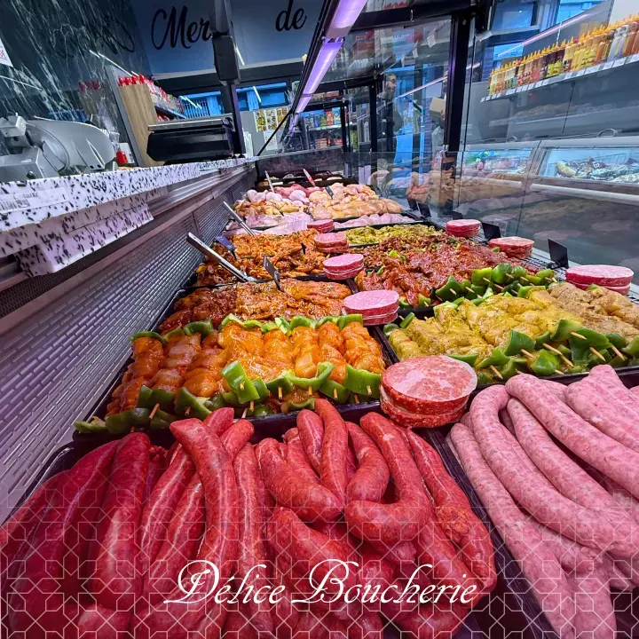
Au comptoir
Nos sélections
Faites glisser la vitrine pour tout voir. Prix affichés en boutique.
-
 Côte de bœufFrance
Persillée, découpée à l'épaisseur voulue. Grill, plancha ou four.
Côte de bœufFrance
Persillée, découpée à l'épaisseur voulue. Grill, plancha ou four.
-
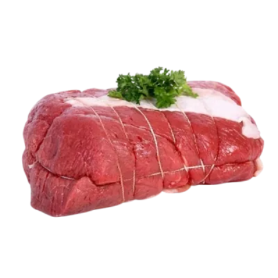
Rosbeef ficeléFrance Préparé et ficelé par nos bouchers. -
 Jarret de bœufFrance
Pour pot-au-feu, tajines et mijotés.
Jarret de bœufFrance
Pour pot-au-feu, tajines et mijotés.
-
 Viande hachéeFrance
Hachée minute, idéale kefta et bolognaise.
Viande hachéeFrance
Hachée minute, idéale kefta et bolognaise.
-
 Pièce à grillerFrance
Rumsteck ou faux-filet, tendre et maigre.
Pièce à grillerFrance
Rumsteck ou faux-filet, tendre et maigre.
-
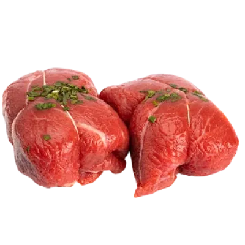
TournedosFrance Cœur de filet bardé, pour les grandes occasions. -
 Gigot d'agneauFrance
Entier ou en tranches, la pièce reine des fêtes.
Gigot d'agneauFrance
Entier ou en tranches, la pièce reine des fêtes.
-
 Gigot d'agneau désossé ficeléFrance
Prêt à rôtir, facile à trancher.
Gigot d'agneau désossé ficeléFrance
Prêt à rôtir, facile à trancher.
-
 Épaule d'agneauFrance
Fondante en cuisson lente, parfaite au four.
Épaule d'agneauFrance
Fondante en cuisson lente, parfaite au four.
-
 Côtelettes d'agneauFrance
Le classique du barbecue.
Côtelettes d'agneauFrance
Le classique du barbecue.
-
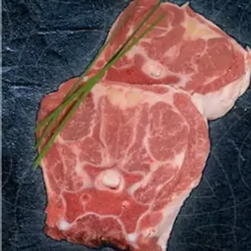
Collier d'agneauFrance Pour couscous et tajines. -
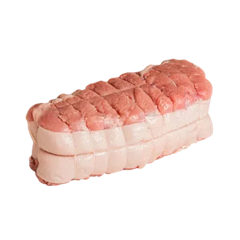
Rôti de veauFrance Bardé et ficelé, tendre et savoureux. -
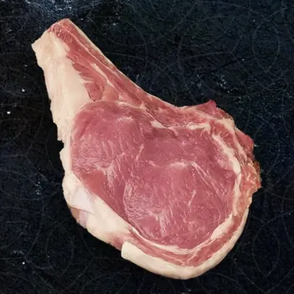
Côte de veauFrance Épaisse et nacrée, à la poêle. -
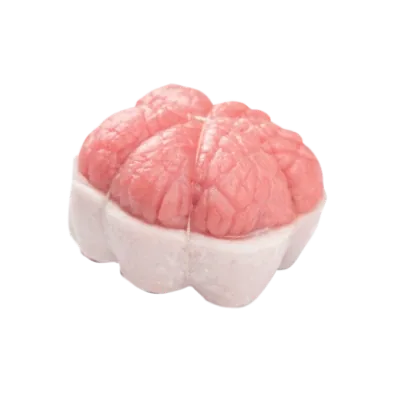
Rôti de veau farciFrance Préparation maison, prêt à enfourner. -
 Poulet PACEurope
Prêt à cuire, entier ou découpé à la demande.
Poulet PACEurope
Prêt à cuire, entier ou découpé à la demande.
-
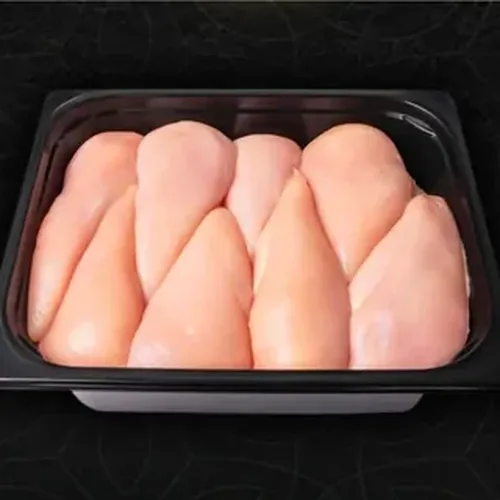
Escalope de pouletEurope Barquette de 2,5 kg. -
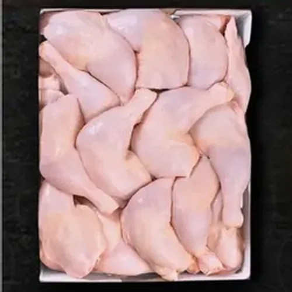
Cuisse de pouletEurope Carton de 10 kg, idéal familles et grandes tablées. -
 Ailes de pouletEurope
À mariner pour le four ou le barbecue.
Ailes de pouletEurope
À mariner pour le four ou le barbecue.
-
 Rôti de volaille farciEurope
Farci maison, prêt à cuire.
Rôti de volaille farciEurope
Farci maison, prêt à cuire.
-
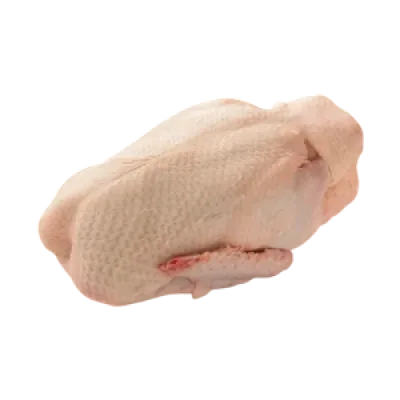
CanetteEurope Chair fine, à rôtir entière. -
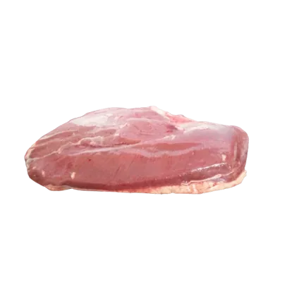
Magret de canardEurope À saisir côté peau, rosé à cœur. - Merguez & saucisses maisonMaison Recettes de nos bouchers, préparées chaque jour.
-
 Brochettes marinéesMaison
Poulet, bœuf ou agneau, marinades maison.
Brochettes marinéesMaison
Poulet, bœuf ou agneau, marinades maison.
-
 Plateau barbecueMaison
Assortiment sur mesure : merguez, brochettes, côtelettes.
Plateau barbecueMaison
Assortiment sur mesure : merguez, brochettes, côtelettes.
En ce moment
À l'affiche en boutique
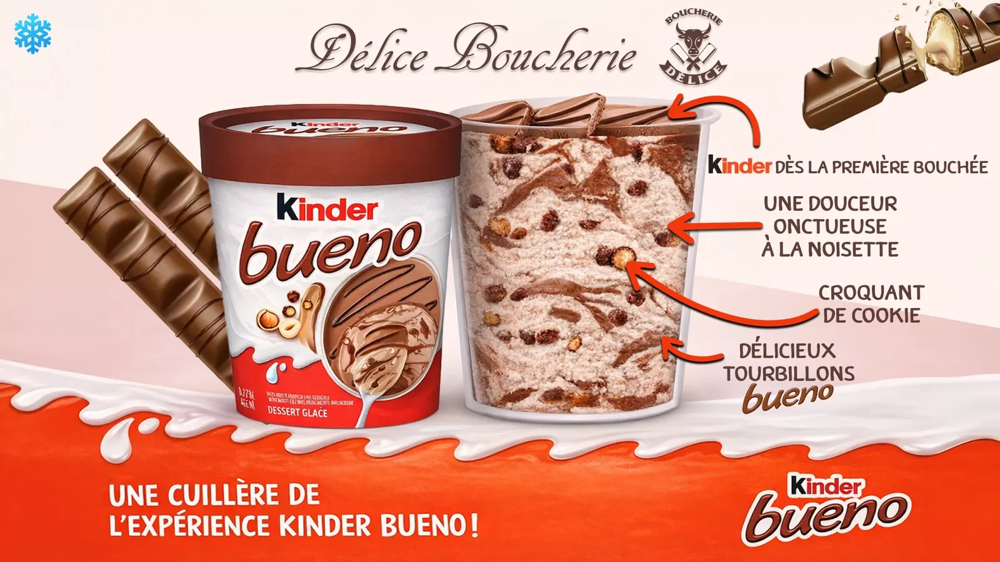
En images
La boutique
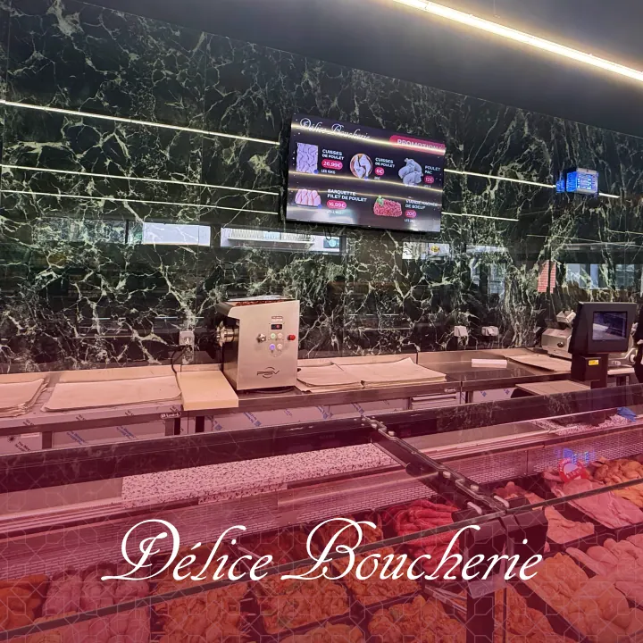
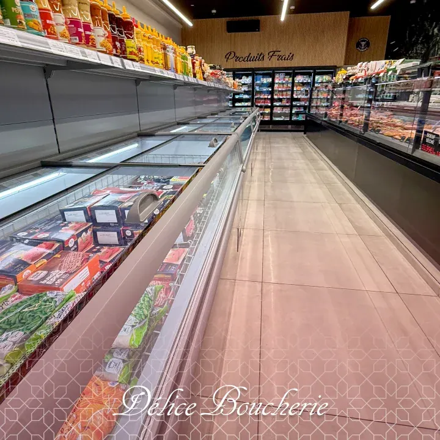
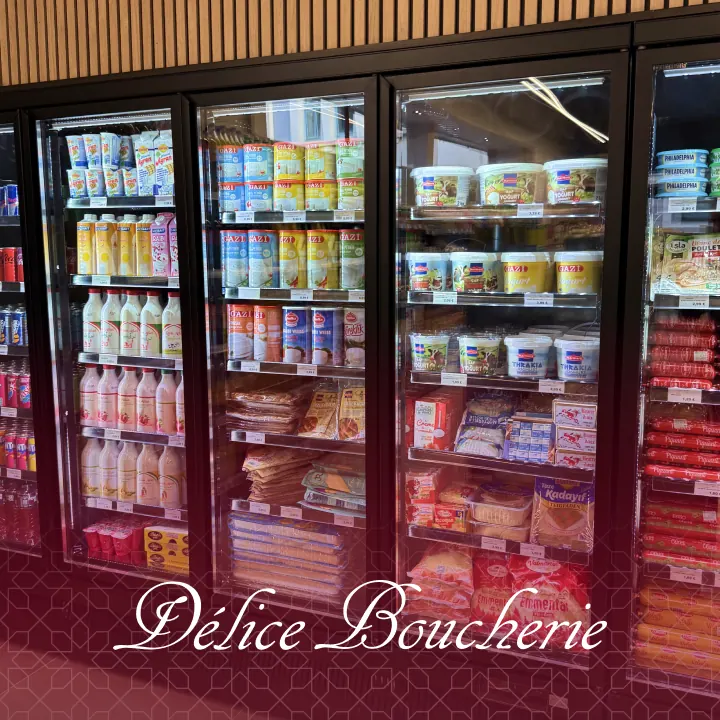
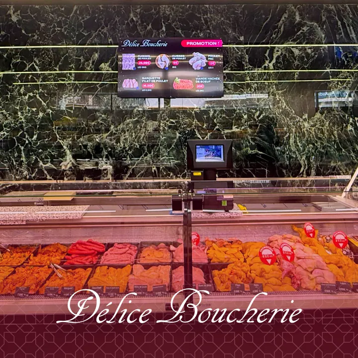
Avis Google
Ils en parlent
4,9★★★★★109 avis Google
« Dimanche, j'ai réservé un poulet rôti par téléphone, pris à 11h30. Nous nous sommes régalés ! L'étal de viande était tellement beau que j'ai pris un assortiment de brochettes de poulet. Je recommande les yeux fermés. »
Marie-Hélène Rastelli
« De passage pour 2 semaines en camping à Digne : brochettes, bavettes, côte de bœuf à des prix très abordables, avec une qualité de service irréprochable. »
Romain Dezitter
« Wahoo la propreté, les rayons bien rangés. Une vitrine à ne plus savoir quoi choisir. Une viande excellente à prix abordable et des bouchers souriants. Ça manquait à Digne-les-Bains. »
Yazid
Nous trouver
Venir chez Délice Boucherie
7 Rue André Honnorat, 04000 Digne-les-Bains
Ouvert 7 jours sur 7, de 8h30 à 19h
Ouvert 7j/7 · 8h30 – 19h
La famille Délice
Nos autres boutiques
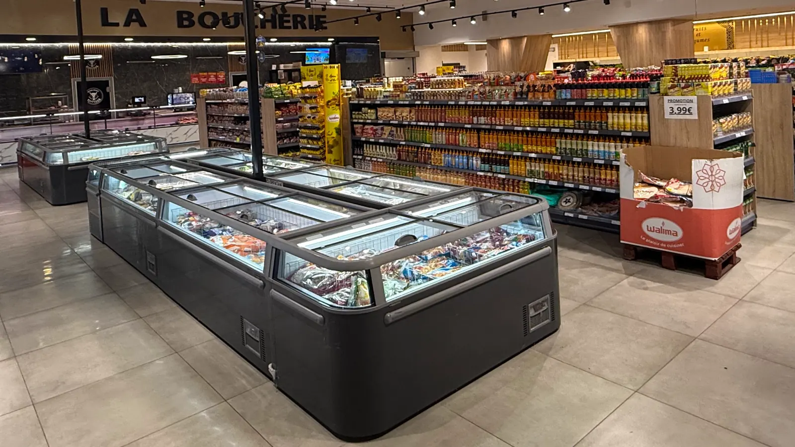
Entrer Supermarché · Manosque Délice Market 544 Av. Frédéric Mistral, 04100 Manosque Ouvert 7j/7 · 8h30 – 21h Entrer
Nouveau
Supermarché · Gap
Délice Market
Rue des Mimosas, ZAC de Fontreyne, 05000 Gap
Ouvert 7j/7 · 8h30 – 21h
Entrer
Boucherie · Manosque
Boucherie Délice
14 bis Av. du Majoral Raoul Arnaud, 04100 Manosque
Ouvert 7j/7 · 8h – 19h
Entrer
Nouveau
Supermarché · Gap
Délice Market
Rue des Mimosas, ZAC de Fontreyne, 05000 Gap
Ouvert 7j/7 · 8h30 – 21h
Entrer
Boucherie · Manosque
Boucherie Délice
14 bis Av. du Majoral Raoul Arnaud, 04100 Manosque
Ouvert 7j/7 · 8h – 19h
 Entrer
Primeur · Manosque
Délice Primeur
327 Av. Frédéric Mistral, 04100 Manosque
Ouvert 7j/7 · 6h – 21h
Entrer
Primeur · Manosque
Délice Primeur
327 Av. Frédéric Mistral, 04100 Manosque
Ouvert 7j/7 · 6h – 21h